ФИКСИКИ
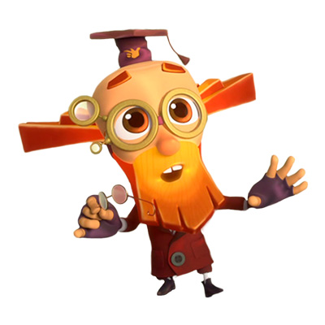
Дедус дотошен и строг.
Он — хранитель древней
мудрости и обычаев. А
еще Дедус — замечательный
учитель юных фиксиков.
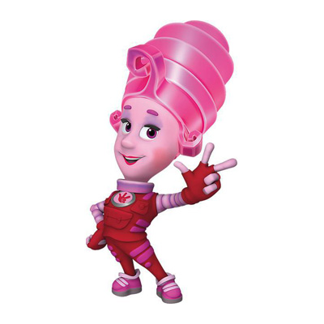
Мася любит чистоту и
порядок, легко справляется
с рутинной работой.
Более практична, чем
ее мечтательный супруг.
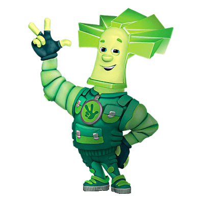
Любит рассказывать о
своей юности, однако
рассказы про несостоявшийся
полёт в космос вызывают
у него сильную грусть.
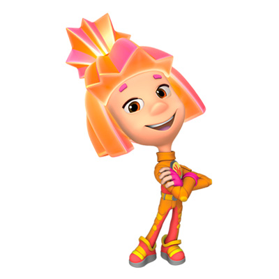
Смышленая, смелая и
активная. Симка всегда
готова прийти на помощь
друзьям. Прекрасно
разбирается в технике.
Нолик очень активный,
общительный, жизнерадостный
и подвижный фиксик,
но при этом не очень
усидчивый и немного ленивый.
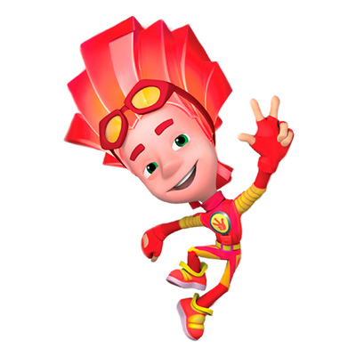
Любит бездельничать и
играть в разные игры
с Ноликом. Очень не любит
учиться и ходить в школу.
Чинит быстро, но не очень крепко.
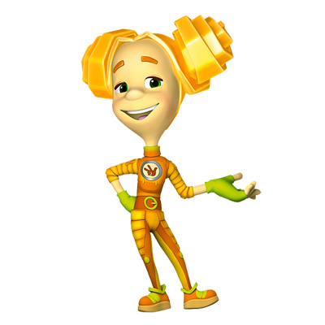
Шпуля — самая высокая
в классе (ростом почти
с Папуса) и очень сильна
физически (может
поднять весь свой класс).
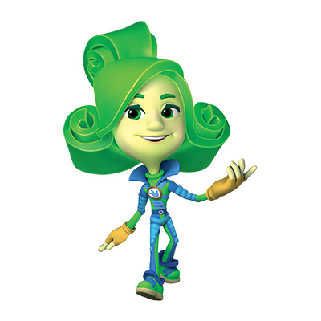
Верта может показаться
самовлюблённой и эгоистичной.
Однако у неё есть
и другие черты —
стремление к лучшему.
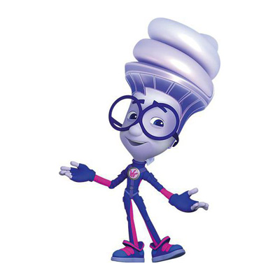
Игрек — типичный мыслитель
и теоретик. Он
интеллектуален, спокоен,
точен, рассудителен,
достаточно сосредоточен в учёбе.
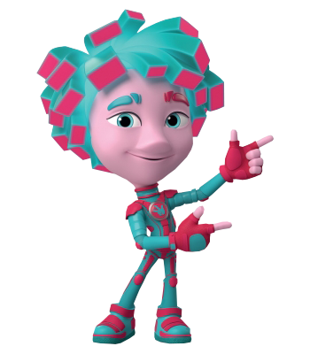
Внешне Фрик почти ничем
не отличается от своего
брата-близнеца Гика. У
него красноватая кожа,
бирюзовые глаза с узким разрезом.
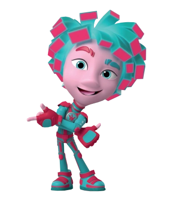
Гик — один из главных
персонажей в мультсериале
«Фиксики», брат-близнец
Фрика, вместе с которым
живёт у Кати.
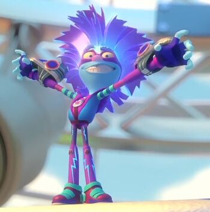
Из-за побочного эффекта
энергобраслетов, Файер
после их многоразового
использования стал злым
и безумным.
Изображения-400px x 400px